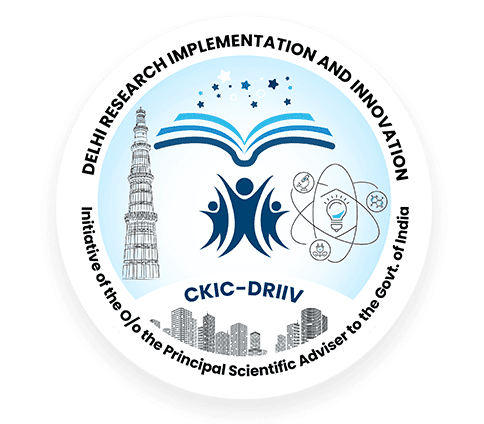

Towards delivering on the drive of Atmanirbhar Bharat, DRIIV is creating strong linkages between Govt Bodies, academic institutions and industries by leveraging Science & Technology to address issues aligned with the UN SDGs. With a vision to contribute in all the five pillars (economy, infrastructure, systems, demography & demand) of Atmanirbhar Bharat campaign as envisaged by our Hon’ble Prime Minister, DRIIV is creating opportunities for researchers and startups to take use cases from local Govt. bodies and implement solutions around that. Along these lines, DRIIV has embarked in MOUs/NDAs with various constituencies to execute sustainable activities including awareness and community engagement programs, contributing to environmentally relevant R&D innovations and S&T interventions, strengthening startup ecosystem etc. These cooperations will help synergizing mutual strengths through combined efforts to bring impactful solutions towards social and economic development of the nation.
| Sr. No. | Name of the Constituency/ Organization |
|---|---|
| 01 | IIT Delhi |
| 02 | IIIT Delhi |
| 03 | Log9 Material Scientific Private Ltd, Bangalore |
| 04 | BASF India Limited, Mumbai |
| 05 | Tesla Power India Pvt Ltd, Gurgaon |
| 06 | Bajaj Motors Ltd, Gurgaon |
| 07 | Blue Planet Environmental Solutions India Pvt Ltd, New Delhi |
| 08 | NHEV/EODB, New Delhi |
| 09 | BHEL, Hyderabad |
| 10 | ReNew Power Pvt Ltd, Gurugram |
| 11 | SLiC, New Delhi |
| 12 | Suave Agro Tech Pvt Ltd, Chitradurga, Karnataka State |
| 13 | RAMJA Genosensor Pvt Ltd, New Delhi |
| 14 | MongoDB, New Delhi (CSR MOU) |
| 15 | Prof.K. Kailasam's Lab, INST, Mohali |
| 16 | SBICAP Ventures Ltd, Mumbai |
| 17 | Innotekverse Pvt Ltd, Ghaziabad |
| 18 | Cappatery Pvt Ltd, Bhubaneswar |
| 19 | Swasthgram NGO, New Delhi |
| 20 | Lungcare Foundation, New Delhi |
| 21 | Umeandus Technologies India Pvt Ltd, Gurugram |
| 22 | Ominiion Technologies LLP, Ahmedabad |
| 23 | PiRhoAlpha Research Pvt Ltd, Mumbai |
| 24 | Indus Scientific Pvt Ltd, Bangalore |
| 25 | Jal Technologies Pvt Ltd, Surat |
| 26 | St. Patrick's Realty Pvt. Ltd, Gurugram |
| 27 | Gurugram Metro Development Authority, Gurugram |
| 28 | Environmental Defense Fund, New York |
| 29 | Manav Vikas Sansthan, Dist Bilaspur, Himachal Pradesh |
| 30 | University of Edinburgh, Edinburgh, U.K |
| 31 | Solid Waste Management Vertical, IIT Delhi |
| 32 | Air Pollution Vertical, IIT Delhi |
| 33 | E-Mobility Vertical, IIT Delhi |
| 34 | Effective Education Vertical, Ashoka University, Sonepat |

DRIIV, an S&T cluster of the Office of the Principal Scientific Adviser to the Government of India, successfully hosted a momentous conference on ‘Role of Open Access in Equitable Climate and Health Action: Prevention, Response, and Financing’ under the esteemed aegis of G20-CSAR. The conference, convened on August 8th, 2023 at the ITC Maurya, New Delhi, served as a vital platform for global dialogue and collaboration on climate-health synergy... read more

Scientific Secretary of the PSA office, said, “Climate change heightens the risk of vector-borne diseases, antimicrobial resistance, and the transmission of zoonotic diseases. Indirectly, it affects food systems, nutrition, water access, housing, education, and care.” Maini called for a comprehensive approach involving science, technology, and innovation to combat these challenges... read more

DRIIV’s conference, convened on August 8th, 2023 at the ITC Maurya, New Delhi, served as a vital platform for global dialogue and collaboration on climate-health synergy. This event, organised under the esteemed aegis of G20 CSAR, underscores the vital role that open access to data, research, and resources play in shaping equitable solutions to these challenges... read more

Climate change’s far-reaching consequences on health are widely acknowledged, ranging from disrupted weather patterns such as heat waves, floods, and cyclones to the surge of vector-borne diseases and antimicrobial resistance. This event, organised under the esteemed aegis of G20 CSAR, underscores the vital role that open access to data, research, and resources play in shaping equitable solutions to these challenges... read more

The experts, including NITI Aayog Member V K Paul and ICMR Director General Rajiv Bahl, highlighted another worry – heat-related injuries and as temperatures go up, the risk of getting hurt from the heat becomes higher. Dr. Paul said, ‘As ice melts because of warmer temperatures, these ancient germs might be released. This adds another layer of concern to the already complex issue of health and climate change.’... read more